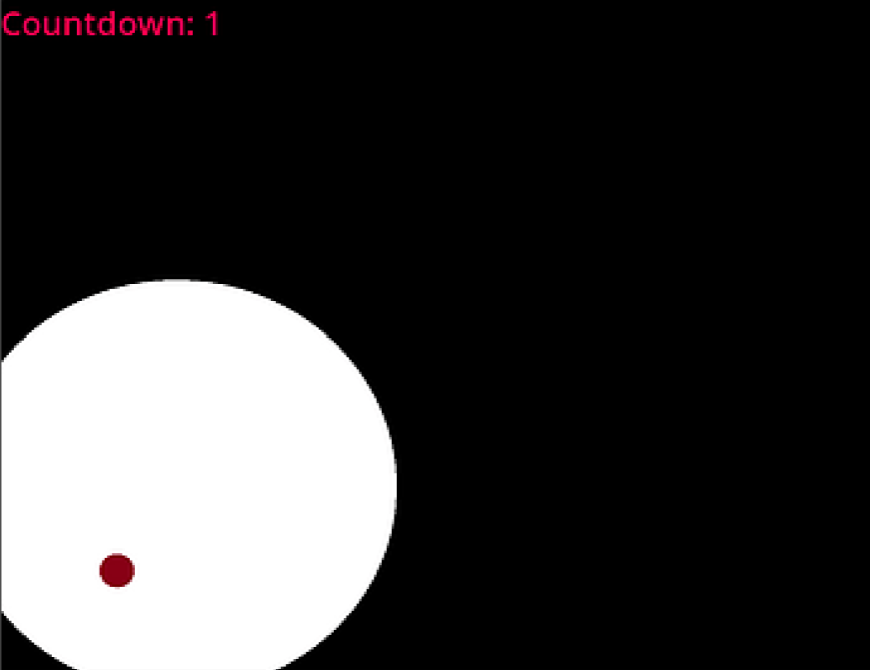
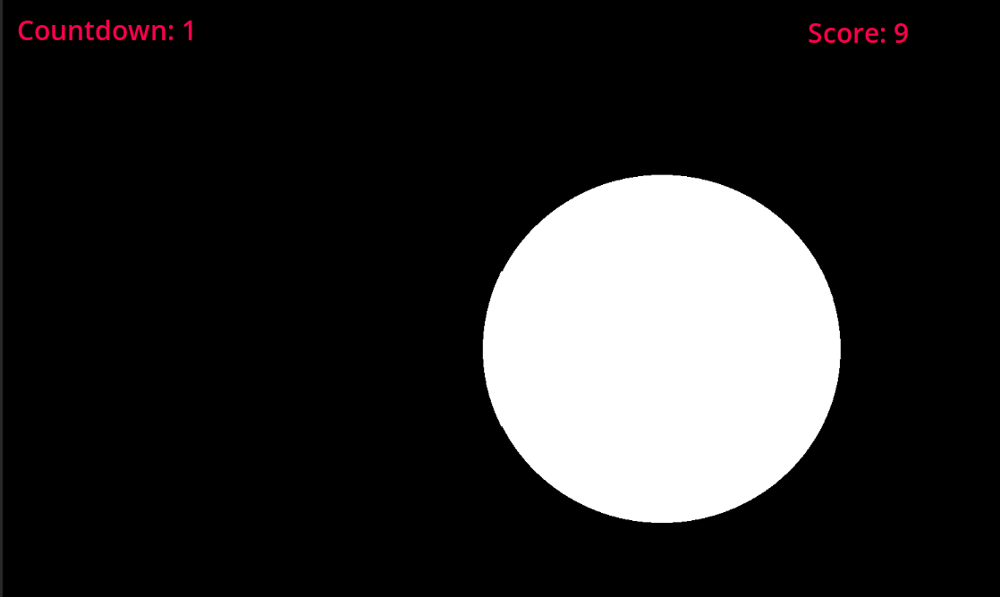
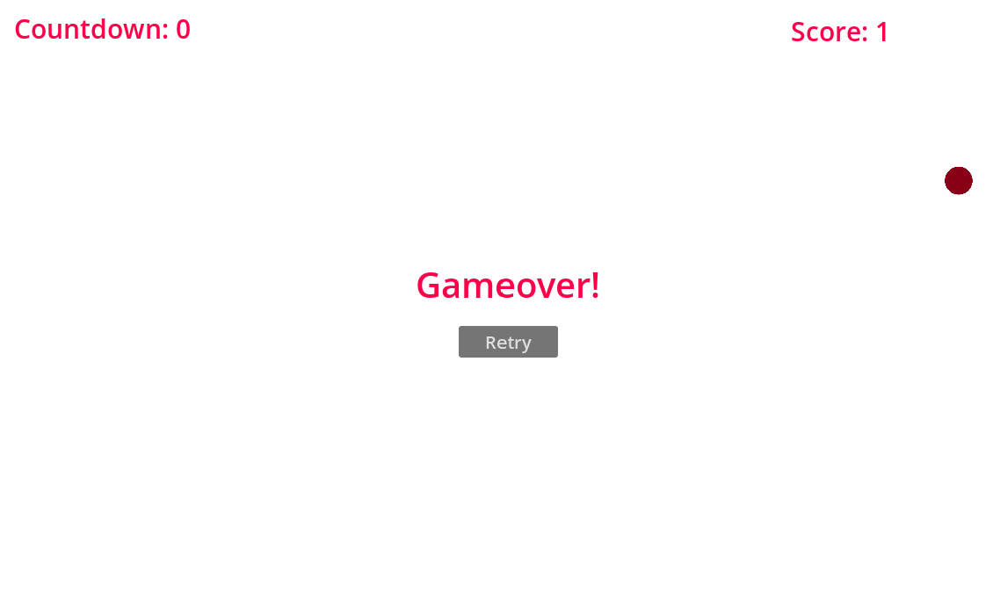

Created within 3 hours for the Trijam #256 Game Jam

PokeADot is a video game created in the godot game engine using gdscript. The player moves around their mouse and a white circle follows it. This reveals what’s hidden in the dark. The player gets three seconds to find the red dot.

The player is shown the amount of time they have left to find the red dot in the top left corner. They can also see how many red dots they have found in the top right corner

The game over screen is shown when the player runs out of time. They are shown where the red dot was and are given the option to restart the game.